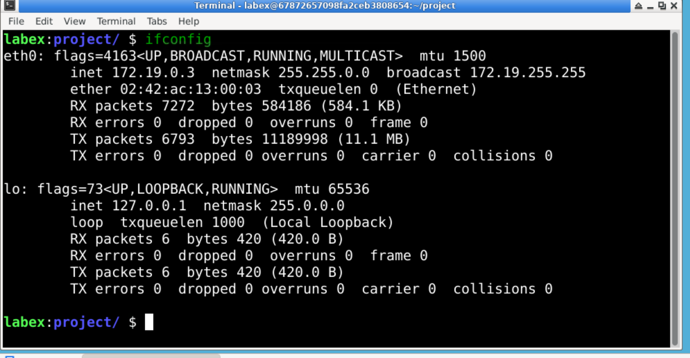

Overview
The ifconfig command is used to configure and display network interface parameters in Linux/Unix. It allows you to view the network interfaces and assign IP addresses to them, making it an essential tool for network administration and troubleshooting.
What Does Ifconfig Command Do?
The ifconfig command is used to:
- Display information about network interfaces (e.g., eth0, wlan0).
- Assign IP addresses to interfaces.
- Enable or disable network interfaces.
- Configure the network interface settings.
By running ifconfig without arguments, you will see the active network interfaces along with their settings such as IP address, netmask, and broadcast address.
Common Use Cases
- View the current IP address of your machine.
- Bring up or down a network interface.
- Assign an IP address to a specific interface.
Example
Here's an example of using the ifconfig command:
# Display network interfaces
ifconfig
# Bring up eth0
ifconfig eth0 up
# Assign IP address to eth0
ifconfig eth0 192.168.1.100This example demonstrates how to check interface status, activate it, and assign an IP address to the interface.
Example Output

The image above shows an example of the output from the 'ifconfig' command, displaying processes sorted by CPU usage.